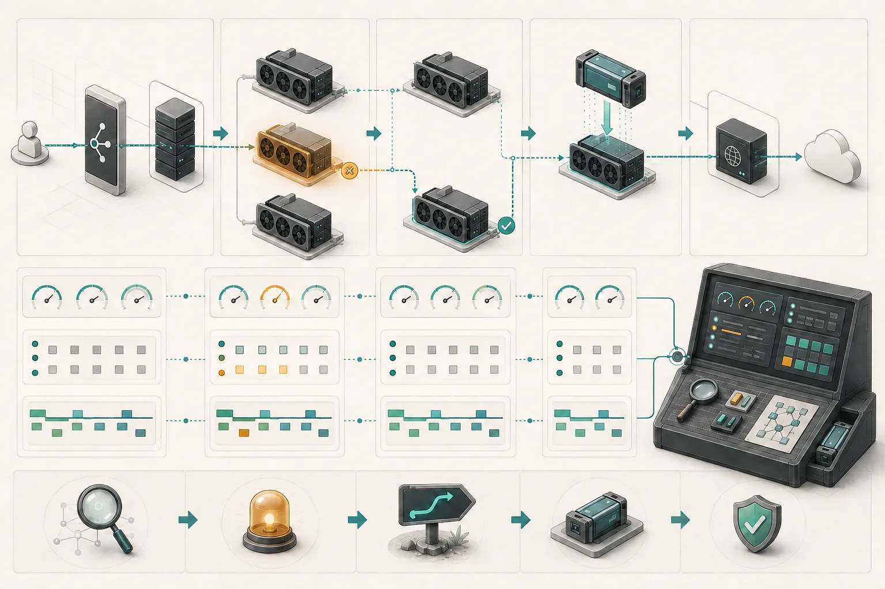

从慢到为什么慢：可观测性、故障与恢复
把网关、引擎、KV Cache、GPU 与网络指标串成因果链，并理解训练与推理的不同恢复策略。
本页目录
学习目标
区分 Metrics、Logs、Traces 和 Profiles；能从 TTFT/TPOT 异常向下定位排队、缓存、GPU 或网络；理解训练 Checkpoint 与在线推理恢复的差异。
一句话直觉：监控像汽车仪表盘，只告诉你“水温高”；可观测性还要能沿着一次行程回放，判断是堵车、发动机、冷却液还是传感器出了问题。

四类信号
| 信号 | 擅长回答 | AI Infra 示例 |
|---|---|---|
| Metrics | 总体趋势和告警 | TTFT P99、KV 使用率、GPU 利用率 |
| Logs | 离散事件和详细上下文 | OOM、模型加载失败、NCCL 错误 |
| Traces | 一次请求跨组件花了多久 | Gateway → Router → Prefill → Decode |
| Profiles | CPU/GPU 时间具体消耗在哪里 | 热点函数、Kernel、内存访问 |
OpenTelemetry 提供统一采集和语义约定。制作时 Semantic Conventions 最新 Release 为 1.44.0；GenAI 约定仍可能快速演进，因此字段名应按项目当前稳定性说明使用。
一次慢请求的因果链
flowchart TD
T[TTFT P99 上升] --> Q{入口队列变长?}
Q -->|是| R[路由不均 / 容量不足]
Q -->|否| P{Prefill 时间变长?}
P -->|是| B[Batch/长 Prompt/Kernel]
P -->|否| K{KV 传输变慢?}
K -->|是| N[网络/RDMA/拓扑]
K -->|否| C[检查模型加载、GPU 与网关]
只看 TTFT 无法知道哪一段慢。Trace 需要把请求 ID 和模型、Token 数、Batch、缓存命中、Prefill/Decode 实例、GPU 与网络信息关联起来。
经典 RED/USE 为什么不够
RED 看 Rate、Errors、Duration；USE 看 Utilization、Saturation、Errors。它们仍有价值，但 LLM 请求持续流式输出，内部有排队、Prefill、Decode、KV 与批处理。一个 HTTP 请求“成功且耗时 30 秒”可能是正常长回答，也可能是严重卡顿。
需要补充 Token 语义：输入/输出 Token、TTFT、TPOT/ITL、等待 Token、Batch、KV 命中与占用，以及每阶段错误。
三种常见假象
GPU 很忙，但用户仍然慢
可能 Batch 过大、少数长请求占用资源，或 GPU 做了大量无法改善首字延迟的工作。
GPU 不忙，但请求在排队
可能调度、数据准备、模型加载、通信同步或显存碎片阻止新请求进入，而不是算力不足。
平均 TTFT 正常，但投诉增加
尾延迟恶化会被平均值掩盖。应同时看 P50、P95、P99，并按模型、租户、输入长度和缓存命中拆分。
PD 分离需要分阶段观测
sequenceDiagram
participant G as Gateway
participant P as Prefill
participant X as KV Transfer
participant D as Decode
G->>P: trace span + token attrs
P->>X: prefill_ms / kv_bytes
X->>D: transfer_ms / topology
D-->>G: tpot / queue / cache
如果只有端到端 TTFT，调 P:D 比例、Batch、KV Policy 或 RDMA 都像盲人摸象。跨层指标的价值不是仪表盘更多，而是能把异常直接映射到下一步行动。
可靠性：训练与推理不同
训练任务状态巨大、持续时间长，常通过 Checkpoint 和可变通信组恢复；在线推理请求更短，但要求流式会话、缓存和路由连续。副本失败时可以重试，但长上下文 Prefill 重算代价高，工具调用还可能有副作用。
可靠性设计要明确 RTO（多久恢复）和 RPO（允许丢多少状态），并通过故障注入验证，而不是只写架构图。
Checkpoint 还受到存储层次影响。写到同伴内存最快，但整个机架断电可能一起丢；节点本地 SSD 较快，却不能保证节点损坏后可用；并行文件系统或对象存储更耐久，但写入和恢复更慢。常见做法是分层：高频写近端、低频异步复制到耐久存储，并验证清单、分片和校验和都完整。模型权重是发布制品，训练 Checkpoint 是可恢复状态，两者不能只按文件大小混为一谈。
完整案例：GPU 看起来正常，P99 却翻倍
平均 GPU busy 保持 75%，但长文档租户的 TTFT P99 翻倍。按租户和输入长度拆分后，只有缓存未命中的 16k+ Prompt 异常；Trace 显示入口队列正常，Prefill 耗时增加，Profile 又指向某个新 Kernel。此时结论不是“加副本”，而是回滚 Kernel 或对特定形状修复编译路径。
若同时发现一个 GPU 出现错误，先把新请求从该副本摘除，判断流式请求能否重试；训练任务则按 RTO/RPO 选择通信组缩减或从最近 Checkpoint 恢复。观测证据要能连接“症状、原因、缓解、恢复验证”四步。
动手练习（20 分钟）
参考答案
展开参考框架
可用信号包括入口等待、等待 Token、输入长度、Prefill 时间、KV 字节与传输时间、TPOT、缓存占用、GPU 内存带宽和 NIC 重传。立即缓解应可回滚、可验证；长期修复要对应已证实原因。RTO/RPO 没有通用数值，但必须与 Checkpoint 间隔、写入层级和业务损失一致。
学完检查
- 我能用 Metrics 找范围、用 Trace 找路径、用 Logs/Profiles 找细节。
- 我会按模型、租户、长度和缓存命中拆分尾延迟。
- 我能解释不同 Checkpoint 存储层级对 RTO/RPO 的影响。
常见误区
| 误区 | 修正 |
|---|---|
| 有 Prometheus 就具备完整可观测性 | 指标还需要跨层语义、Trace 关联与诊断方法。 |
| 平均延迟正常即可 | 用户问题常集中在 P95/P99 和特定租户/输入。 |
| GPU 利用率低就应减少机器 | 可能是队列、同步、数据或内存瓶颈。 |
| 自动重试总能提高可靠性 | 有副作用的工具调用可能被重复执行。 |
对应论坛场次
关注三个生产事故如何从 Token 一直定位到 GPU。 9/9 16:15 · Why Your TTFT Lies
关注最小指标集如何映射 P:D、Batch、KV 与 RDMA 调参。 9/9 11:45 · Meta Training Through Failures
关注训练 RTO、Checkpoint 位置与动态通信组。
离线笔记：推理可观测性 · TTFT 诊断 · Meta 训练容错
带着这些问题听
- Trace 怎样跨流式连接和 P/D 两个阶段保持关联？
- 指标是否按模型、租户、长度和缓存命中分解？
- 故障演练测出的 RTO/RPO 是多少，哪些状态必须重建？
五道自测题
1. Metrics 与 Traces 的主要区别？
Metrics 展示总体趋势；Trace 还原某一次请求跨组件的路径和耗时。
2. 为什么平均 TTFT 会骗人？
它会掩盖尾延迟和特定模型、长度、租户或缓存状态下的问题。
3. GPU 不忙但队列增长，可能是什么？
调度、模型加载、通信、数据准备、显存碎片等阻塞了工作进入 GPU。
4. RTO 与 RPO 分别是什么？
RTO 是目标恢复时间；RPO 是可接受的状态或数据丢失范围。
5. Agent 工具调用为何不能盲目重试？
调用可能产生外部副作用，重复执行会造成重复修改、发送或交易。